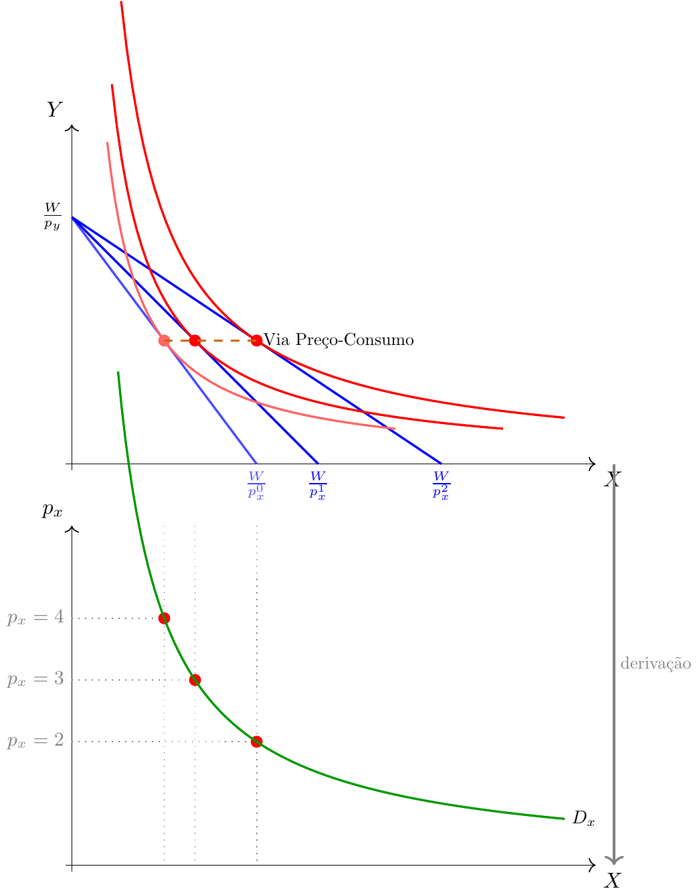
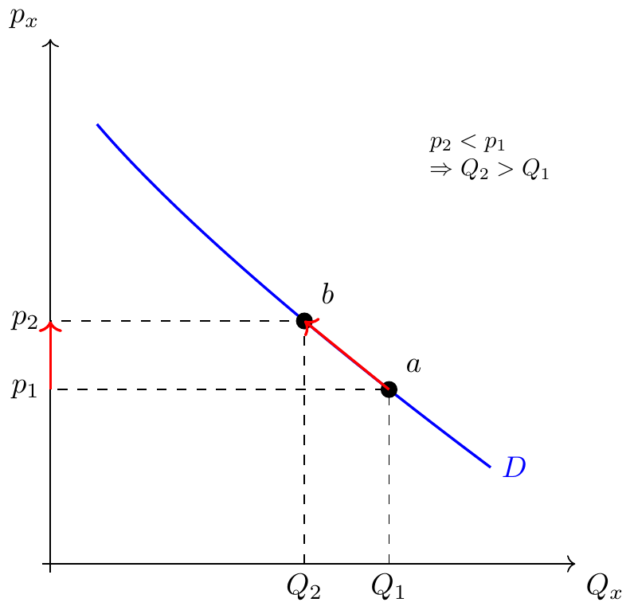
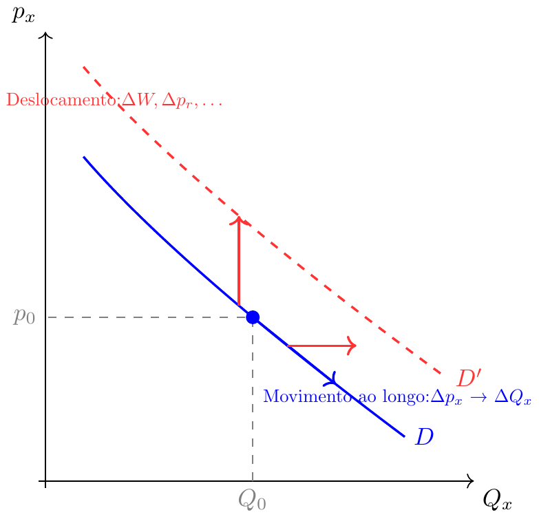
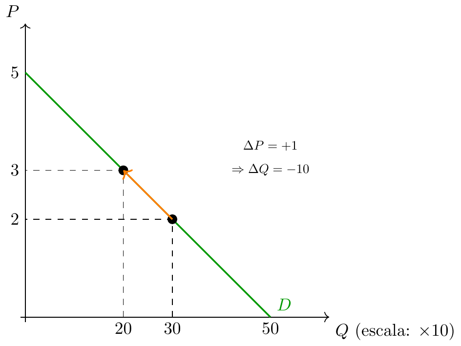
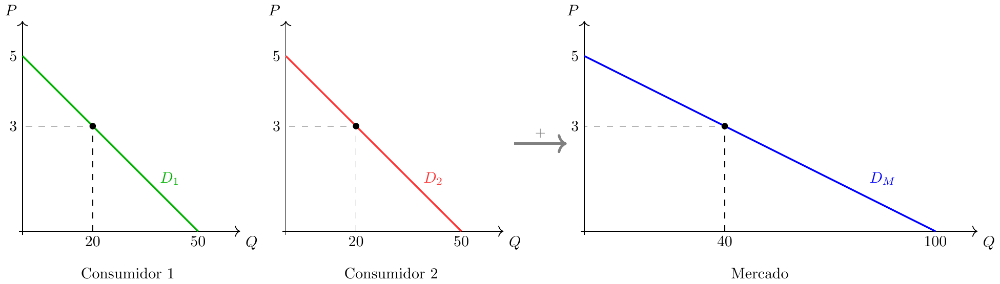
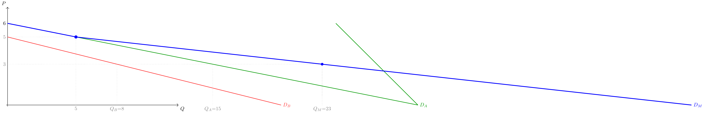

Microeconomia
Aula 6: TMS, Ótimo de Consumo e Procura
ISCAL - IPL
Sumário
- 📐 Taxa Marginal de Substituição — definição e declive
- 📉 TMS decrescente e a sua interpretação
- 🎯 O ótimo de consumo e condição \(|TMS| = p_x/p_y\)
- 🔗 Derivação da curva de procura marshalliana
- 📜 Lei da Procura e deslocamentos da curva
- ➕ Procura agregada — soma horizontal
- 📝 Exercícios
Revisão — O que Temos até Agora
Restrição Orçamental: o que o consumidor pode comprar
\[X p_x + Y p_y = W \;\Longleftrightarrow\; Y = \frac{W}{p_y} - \frac{p_x}{p_y} X\]
Curva de Indiferença: o que o consumidor valoriza da mesma forma
\[\text{Conjunto de cabazes com a mesma satisfação}\]
Problema do consumidor: encontrar o cabaz na restrição orçamental que está na curva de indiferença mais alta possível.
Taxa Marginal de Substituição — Definição
A Taxa Marginal de Substituição (TMS) entre \(X\) e \(Y\) é a quantidade de \(Y\) a que o consumidor está disposto a prescindir para obter uma unidade adicional de X, mantendo-se indiferente.
\[TMS_{x,y} = \frac{\Delta Y}{\Delta X} \;\Bigg|_{\overline{U}} < 0\]
- O sinal é negativo — abdicar de Y para obter X
- Falamos frequentemente de \(|TMS|\) para facilitar comparações
- A TMS é o declive da curva de indiferença num ponto
TMS — Gráfico

TMS é Decrescente (em Valor Absoluto)
Ao longo de uma curva de indiferença convexa, \(|TMS|\) diminui à medida que \(X\) aumenta.
Porquê?
- Quando o consumidor tem pouco X e muito Y, valoriza muito mais uma unidade adicional de X → dispõe-se a abdicar de muito Y
- À medida que acumula mais X, cada unidade adicional vale menos — está mais próximo do ponto de saciedade
- Logo, abdica de menos Y por cada unidade adicional de X
A TMS decrescente reflete a lei da utilidade marginal decrescente — veremos a ligação formal na Aula 7.
TMS ao Longo da Curva

O declive das retas tangentes (em valor absoluto) vai diminuindo de A para C.
O Ótimo de Consumo — Geometria
O consumidor quer atingir a curva de indiferença mais alta possível, sem ultrapassar o orçamento.
O ponto ótimo \(A^*\) é aquele onde a restrição orçamental é tangente a uma curva de indiferença — o ponto de toque.
Condição de Ótimo
No ponto ótimo \(A^*\), a curva de indiferença é tangente à restrição orçamental.
Dois declives iguais:
- Declive da RO: \(-\dfrac{p_x}{p_y}\)
- Declive da CI: \(TMS_{x,y}\)
\[\boxed{|TMS_{x,y}| = \frac{p_x}{p_y}}\]
Interpretação Económica da Condição de Ótimo
\[|TMS| = \frac{p_x}{p_y}\]
| Lado | Significado |
|---|---|
| \(|TMS|\) | Taxa a que o consumidor está disposto a trocar Y por X |
| \(p_x/p_y\) | Taxa a que o mercado permite trocar Y por X |
Situações fora do ótimo:
- Se \(|TMS| > p_x/p_y\) → consumidor valoriza X mais do que o mercado cobra → deve comprar mais X e menos Y
- Se \(|TMS| < p_x/p_y\) → consumidor valoriza X menos do que o mercado cobra → deve comprar menos X e mais Y
- No ótimo: valorização subjetiva = preço de mercado ✓
Exemplo Numérico
Dados: \(W = 40\), \(p_x = 2\), \(p_y = 4\). A TMS do consumidor num dado ponto \((X, Y)\) é \(|TMS| = Y/X\).
Passo 1 — Condição de ótimo:
\[\frac{Y}{X} = \frac{p_x}{p_y} = \frac{2}{4} = \frac{1}{2} \;\Rightarrow\; Y = \frac{X}{2}\]
Passo 2 — Substituir na restrição orçamental:
\[2X + 4 \cdot \frac{X}{2} = 40 \;\Rightarrow\; 2X + 2X = 40 \;\Rightarrow\; X^* = 10\]
\[Y^* = \frac{10}{2} = 5\]
Verificação: \(2 \times 10 + 4 \times 5 = 20 + 20 = 40 = W\) ✓ e \(|TMS|=5/10=1/2=p_x/p_y\) ✓
Ótimo do Exemplo — Gráfico

📋 Síntese — Ótimo de Consumo
| Conceito | Definição |
|---|---|
| TMS | Taxa de troca subjetiva de Y por X ao longo da CI |
| TMS decrescente | Quanto mais X se tem, menor o valor de mais uma unidade |
| Ótimo \(A^*\) | Cabaz na CI mais alta que a RO permite atingir |
| Condição \(\|TMS\|=p_x/p_y\) | Igualdade entre valorização subjetiva e taxa de mercado |
Da Escolha Ótima à Procura 🔗
O ótimo \(A^*(p_x, p_y, W)\) depende dos preços e do orçamento.
Pergunta: se \(p_x\) variar (ceteris paribus), o que acontece à quantidade ótima de \(X\)?
A resposta é a curva de procura marshalliana — o conjunto dos pares \((p_x,\, x^*)\) obtidos variando \(p_x\) e recalculando o ótimo.
Intuição: se o preço de X sobe, a RO roda para dentro → o novo ótimo tem, em geral, menos X.
Derivação da Procura — Gráfico

A Curva de Procura Marshalliana
A curva de procura (marshalliana) é o conjunto dos pares \((p_x,\, x^*)\) de escolha ótima quando \(p_x\) varia, mantendo fixos \(W\), \(p_y\) e as preferências.
Convenção gráfica (Marshall, 1895): representamos \(p_x\) no eixo vertical e \(Q_x\) no horizontal — ou seja, é a procura inversa que está no gráfico.
- Forma direta: \(Q_x = f(p_x)\) — quantidade em função do preço
- Forma inversa: \(P = g(Q_x)\) — preço em função da quantidade
São a mesma relação, vista de ângulos diferentes.
Lei da Procura
Lei da Procura: entre a quantidade procurada de um bem e o seu preço existe uma relação negativa, ceteris paribus.
Se o preço aumenta, a quantidade procurada diminui.
O preço sobe → a RO roda para dentro → o ótimo move-se para menos \(X\) → movimento ao longo da curva.
Atenção: uma variação de preço provoca uma variação da quantidade procurada (movimento ao longo da curva), não uma variação da procura (deslocamento da curva).
Lei da Procura — Gráfico

O que Desloca a Curva de Procura?
Uma variação de \(p_x\) não desloca a curva — move um ponto ao longo dela. Os deslocamentos da curva ocorrem quando mudam variáveis exógenas:
| Variável | Efeito sobre \(D_x\) |
|---|---|
| \(\uparrow W\) (bem normal) | Expansão → curva desloca para a direita |
| \(\uparrow W\) (bem inferior) | Contração → curva desloca para a esquerda |
| \(\uparrow p_{\text{substituto}}\) | Expansão |
| \(\uparrow p_{\text{complementar}}\) | Contração |
| Preferências favoráveis | Expansão |
Deslocamento vs. Movimento ao Longo

Modelos Lineares para a Procura
Para simplificação, usamos com frequência modelos lineares:
\[Q^D = a - b \cdot P \qquad \text{(forma direta)}\]
\[P = \frac{a}{b} - \frac{1}{b} Q^D \qquad \text{(forma inversa)}\]
Interpretação dos parâmetros:
- \(a\): quantidade máxima procurada (ao preço zero)
- \(a/b\): preço máximo que alguém paga (preço de reserva máximo)
- \(b\): sensibilidade da quantidade ao preço (\(\Delta Q / \Delta P = -b\))
Exemplo — Procura Linear Individual
Procura individual de pão sem glúten: \(Q^D = 50 - 10P\)

Forma inversa: \(P = 5 - \dfrac{1}{10} Q^D\)
Procura Agregada — Soma Horizontal
A procura de mercado obtém-se pela soma horizontal das procuras individuais: para cada preço, somam-se as quantidades procuradas por todos os consumidores. \[Q^D_M(P) = \sum_{i=1}^{n} Q^D_i(P)\]
Atenção: somam-se quantidades (horizontalmente), nunca preços!
Soma Horizontal — Exemplo
Dois consumidores idênticos: \(Q_1 = Q_2 = 50 - 10P\)

- \(Q_M = 50 - 10P + 50 - 10P = 100 - 20P\)
- Inversa: \(P = 5 - \dfrac{1}{20}Q_M\)
- Ao preço \(P=3\): cada consumidor procura 20, mercado procura 40 ✓
Procura Agregada com Consumidores Diferentes
Quando os consumidores têm procuras diferentes, o preço máximo que cada um paga difere — há um kink na procura agregada.
Exemplo: \(Q_A = 30 - 5P\) (ativo para \(P \leq 6\)) e \(Q_B = 20 - 4P\) (ativo para \(P \leq 5\))

- Para \(P > 5\): apenas \(A\) está no mercado → \(Q_M = 30 - 5P\)
- Para \(P \leq 5\): ambos ativos → \(Q_M = 50 - 9P\)
- Kink em \(P=5\), \(Q_M=5\)
📋 Síntese Final
| Conceito | Ideia-chave |
|---|---|
| Curva de procura | Pares \((p_x, x^*)\) do ótimo do consumidor |
| Lei da Procura | \(\uparrow P \Rightarrow \downarrow Q^D\) (ceteris paribus) |
| Movimento ao longo | Causado por variação de \(p_x\) |
| Deslocamento da curva | Causado por \(\Delta W\), \(\Delta p_r\), \(\Delta\) preferências |
| Procura direta/inversa | \(Q=f(P)\) / \(P=g(Q)\) — a mesma relação |
| Procura de mercado | Soma horizontal das individuais |
📝 Escolha Múltipla — Q1
Um aumento no rendimento do consumidor, mantendo os preços constantes, para um bem normal provoca:
- Um movimento ao longo da curva de procura para a esquerda
- Uma diminuição da quantidade procurada a qualquer preço
- Um deslocamento da curva de procura para a direita ✅
- Nenhuma alteração na procura
Justificação: A variação de rendimento é exógena ao preço — desloca a curva. Para um bem normal, mais rendimento implica mais procura a cada preço → deslocamento para a direita.
📝 Escolha Múltipla — Q2
A procura de mercado obtém-se a partir das procuras individuais através de:
- Soma vertical dos preços de reserva de cada consumidor
- Média das quantidades individuais para cada preço
- Soma horizontal das quantidades individuais para cada preço ✅
- Multiplicação das quantidades individuais pelo número de consumidores
Justificação: Para cada preço de mercado, somam-se as quantidades que cada consumidor deseja — é uma adição de quantidades (horizontal), não de preços.
📝 Exercício de Desenvolvimento
Dois consumidores têm as seguintes procuras individuais:
- Consumidor A: \(Q_A = 30 - 5P\) (válida para \(P \leq 6\))
- Consumidor B: \(Q_B = 20 - 4P\) (válida para \(P \leq 5\))
(a) Calcule a procura de mercado \(Q_M(P)\), indicando os intervalos de preço relevantes.
(b) Calcule as quantidades individuais e de mercado para \(P = 3\).
(c) Represente graficamente as três curvas de procura, assinalando o ponto de kink.
📝 Solução
(a) Para \(P > 5\): só o consumidor A está no mercado (B não procura nada): \[Q_M = 30 - 5P, \quad P \in (5,\, 6]\]
Para \(P \leq 5\): ambos ativos: \[Q_M = Q_A + Q_B = (30 - 5P) + (20 - 4P) = 50 - 9P, \quad P \in [0,\, 5]\]
Kink (descontinuidade de inclinação) em \(P = 5\): \(Q_M = 50 - 9 \times 5 = 5\) ✓
(b) Para \(P = 3\):
\[Q_A = 30 - 5 \times 3 = 15 \qquad Q_B = 20 - 4 \times 3 = 8 \qquad Q_M = 15 + 8 = 23\]
Ou pela fórmula agregada: \(Q_M = 50 - 9 \times 3 = 50 - 27 = 23\) ✓
(c) O gráfico tem três curvas: \(D_A\) (intercepta \(P=6\), \(Q=0\) e \(P=0\), \(Q=30\)), \(D_B\) (intercepta \(P=5\), \(Q=0\) e \(P=0\), \(Q=20\)), e \(D_M\) com kink em \((Q=5,\, P=5)\): segmento superior igual a \(D_A\) e segmento inferior mais inclinado horizontalmente.

Microeconomia (Plano de Transição)